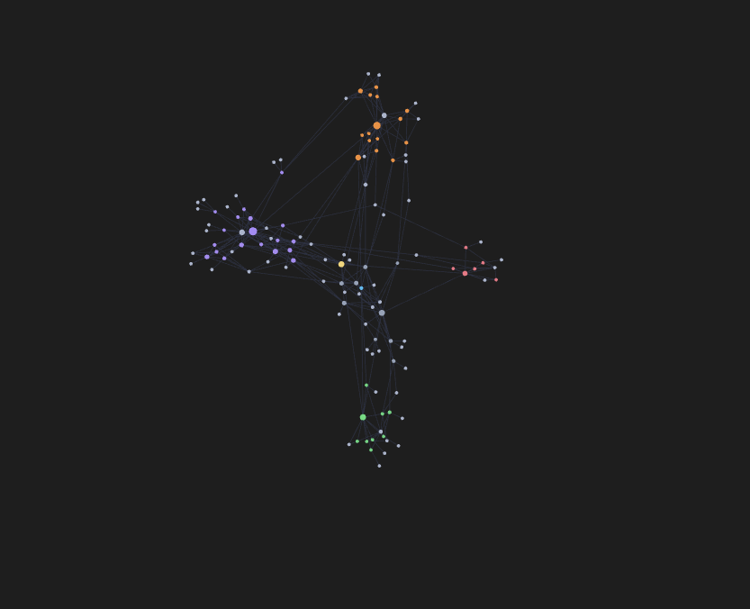
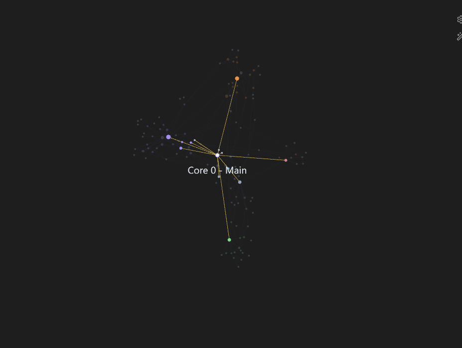

Personal knowledge system
Obsidian AI memory graph
Building a memory system for AI collaboration
Most people treat AI conversations as disposable — start fresh every session, re-explain everything, lose all context. I built a different system. The Obsidian memory graph is a structured knowledge vault that gives Claude persistent, organized memory across every conversation — so it already knows who I am, what I'm building, how I like to work, and what we've done together.
The vault is structured like a graph database in plain text. Every note is a node. Every [[wiki-link]] is an edge. Obsidian renders the whole thing as an interactive knowledge graph — I can see how my projects, tools, preferences, and references are all connected at a glance.
The schema was designed so Claude can read and write to it mid-conversation — updating project notes as work progresses, adding new memories after key decisions, and always navigating from Home.md as the central map of content. Instead of dumping everything into a flat file, each piece of information lives in the right place and links outward to related context.
Vault structure
- Home.md — central map of content; every session starts here for navigation context.
- User/Hikmet Bisen.md — personal profile: education, goals, skills, climbing background, contact info.
- Projects/ — one dedicated note per project, each with tech stack, status, links, and context.
- Feedback/Interaction Preferences.md — how I like Claude to communicate. Gets updated as I discover what works.
- Tools/ — notes on the tools Claude uses to interact with my environment.
- References/External Links.md — GitHub, LinkedIn, live URLs — one place, always current.
The graph view in Obsidian turns this into something visual — every node clusters by connection density. My portfolio sits at the center surrounded by all 8 projects. FORGE AI connects to the tech stack notes. My profile connects to everything. It's a map of how I think and what I'm building, not just a list of facts.
This project taught me that the interface between a human and an AI tool is a design problem. Structure the information well and the collaboration compounds over time. Leave it unstructured and every session starts from zero. Good knowledge architecture is the difference between an AI that knows you and one that doesn't.
Graph snapshots
Live captures of the vault taken on 2026-05-25 — the day the core system was fully structured.

